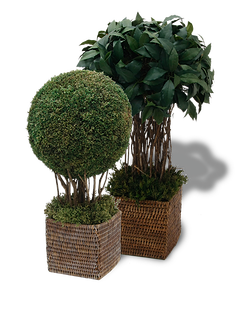

SUSTENTABILIDADE - INICIATIVA VERDE
Estamos convencidos que o desenvolvimento de projetos, a execução de obras e o cuidado com o meio ambiente são tarefas absolutamente compatíveis. O objetivo da INSIDE em parceria com a Iniciativa Verde é direcionar cada detalhe do trabalho com responsabilidade e respeito pelo solo, a água, o ar, a flora e a fauna. Por isso, o uso de técnicas adequadas em cada atividade e pelas especificações de produtos sempre estão focados no cuidado com o meio ambiente. Em cada projeto, os clientes já contribuem para o plantio de árvores, organizado pela INSIDE em adesão ao programa Amigo da Floresta , da OSCISP (organização ambientalista dedicada à busca pela redução de impactos ambientais provocados pelas atividades humanas) que tem por objetivo promover restauros florestais de mata nativa, aliados à educação ambiental, capacitação de comunidades rurais e pesquisas científicas. |
 |
Também implementamos iniciativas e políticas internas, propondo soluções simples, sustentáveis e economicamente viáveis aos clientes, através de métodos e do uso de diversos materiais ecoeficientes nos projetos e obras, sendo alguns deles:
- Pisos de bambu (recurso renovável);
- Pastilhas de coco (contribui para a fixação de CO2);
- Espelhos Guardian (possuem menos teor de chumbo em sua composição);
- Marcenaria com produtos certificados pelo FSC;
- Revestimentos produzidos por empresas com preocupação ambiental;
- Lâmpadas LED e fluorescentes (consumo chega a 85% a menos das lâmpadas comuns);
- Automação (otimiza funcionalidade, conforto, manutenção, flexibilidade de uso, segurança e energia. Sua utilização minimiza o uso de cabeamentos e gera economia na obra);
- Tapetes de fibra natural (por se tratarem de plantas parasitas, quando extraídas permitem que as árvores ao redor se desenvolvam);
- Sistemas sanitários (redução do consumo de água);
- Ecomosaicos (material reciclado que utiliza o resíduo eliminado pelas máquinas de corte de marmorarias: uma mistura de água e pó de pedra .Essa água residual é tratada e volta para a área de produção para ser reutilizada);
- Madeira de demolição (reuso de peças que seriam descartadas, diminuindo a demanda por madeiras novas);
- Chapas de gesso Cleaneo (chapas com propriedades acústicas que possui a capacidade de melhorar continuamente a qualidade do ar nos ambientes em que estão instaladas);
Nossa meta é desenvolver soluções verdes economicamente atraentes para nossos clientes, uma vez que a adoção de soluções ambientalmente sustentáveis nas obras não acarreta em um aumento de preço, principalmente quando adotadas durante as fases de concepção do projeto. Em alguns casos, podem até reduzir custos. Ainda que o preço de implementação de alguns sistemas ambientalmente sustentáveis em um edifício verde gere um custo cerca de 5% maior do que um edifício convencional, sua utilização pode representar uma economia de 30% de recursos, durante o uso e ocupação do imóvel.
Agora você já pode fazer parte desta Iniciativa Verde. Ao fazer o seu projeto sustentável, você estará plantando árvores e compensará sua emissão anual de Gases de Efeito Estufa, contribuindo com o esforço global para impedir o aquecimento de nosso planeta e, ao mesmo tempo, estará proporcionando uma série de benefícios ambientais para a nossa e as próximas gerações.